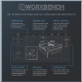

Workbench is a product designed for my interaction design class. We were encouraged to design a product that stretches the limits of modern technology. My partner and I created the idea of a digital workbench for architectural modeling. The workbench has a full touch-screen tabletop with a screen size of 3 feet by 6 feet.
During this project, we conducted research, created personas, performed competitive analysis, built wireframes, and conducted usability tests. Our findings were summarized in a written report and the final concept was presented with a poster.
The poster and UI mockups were created using InDesign, with some assets created using Photoshop and Illustrator. We designed Workbench for working professionals and serious hobbyists and aimed to create a product that was intuitive for novice users while efficient for expert users.